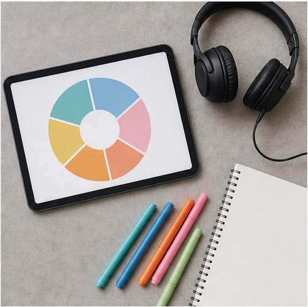
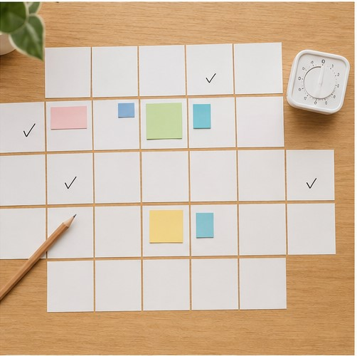

수업과 복습이 분리됩니다
수업 중에는 이해했지만 일상에서 다시 말하지 않으면 표현은 빠르게 흐려집니다. 수업 직후 무엇을 복습할지 명확해야 실제 사용으로 이어집니다.
영어 실력은 한 번의 긴 수업보다 배운 내용을 자주 다시 말할 때 달라집니다. 영어드림은 원어민 1:1 수업에서 확인한 부족한 부분을 담당 선생님의 복습 안내와 데일리 과제로 이어갑니다.
원어민 선생님은 수업을,
담당 선생님은 수업 밖의 학습을 관리합니다.
수업의 만족도와 실제 실력 변화는 다를 수 있습니다. 배운 것을 다시 쓰고, 부족한 부분을 확인하고, 다음 학습으로 연결하는 구조가 필요합니다.
수업 중에는 이해했지만 일상에서 다시 말하지 않으면 표현은 빠르게 흐려집니다. 수업 직후 무엇을 복습할지 명확해야 실제 사용으로 이어집니다.
학습자가 스스로 발음, 문법, 어휘, 듣기 중 어디에서 막히는지 판단하기는 어렵습니다. 수업 내용을 확인하고 학습 우선순위를 정해줄 사람이 필요합니다.
처음부터 과도한 계획을 세우면 바쁜 날에 흐름이 끊깁니다. 실제 일정 안에서 반복할 수 있는 짧은 과제가 꾸준함을 만듭니다.
원어민 수업, 영역별 진단, 개인 학습 계획이 하나의 흐름으로 연결되는 과정을 실제 화면으로 확인하세요.


의지의 문제가 아니라 내 생활 안에서 공부가 반복되도록 도와줄 구조가 필요한 분에게 적합합니다.
오늘 해야 할 짧은 학습이 구체적으로 보이면 바쁜 날에도 다시 시작하기 쉬워집니다.
반복해서 막히는 영역을 확인하고 교정받은 표현을 다음 수업 전에 다시 말합니다.
해외 근무, 면접, 여행처럼 목표 시점에 맞춰 남은 기간의 우선순위를 정합니다.
말하기 수준과 목표, 가능한 학습 시간을 확인합니다.
목표 상황을 직접 말하고 필요한 표현을 교정받습니다.
담당 선생님이 반복되는 어려움과 학습 우선순위를 확인합니다.
짧은 과제로 복습하고 변화에 맞춰 다음 학습을 조정합니다.
원어민 1:1 수업에 더해 담당 선생님이 수업 내용을 확인하고 복습과 다음 학습을 연결합니다. 단순 출석 관리가 아니라 수업에서 드러난 부족한 부분을 학습 계획에 반영하는 방식입니다.
학습자의 일정과 수준에 맞춰 반복 가능한 분량을 안내합니다. 한 번에 오래 공부하기보다 배운 표현을 짧게라도 자주 다시 말하는 데 초점을 둡니다.
수업 진도와 학습 반응, 반복해서 어려워하는 영역을 확인하고 복습 방향과 데일리 학습을 안내합니다. 목표나 일정이 달라지면 과정 조정도 함께 살핍니다.
가능합니다. 왕초보는 짧은 반응과 기본 문장부터 시작하고, 수업에서 사용한 표현을 다시 말할 수 있도록 복습 순서를 단순하게 구성합니다.
현재 말하기 수준, 영어가 필요한 상황, 목표 시점, 가능한 수업·복습 시간을 확인한 뒤 적합한 과정과 학습 흐름을 안내합니다.